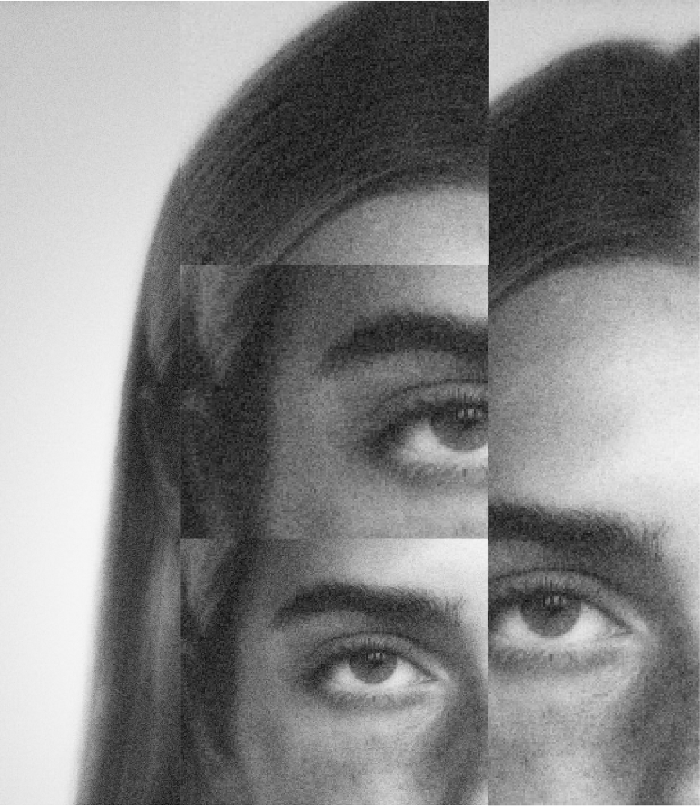
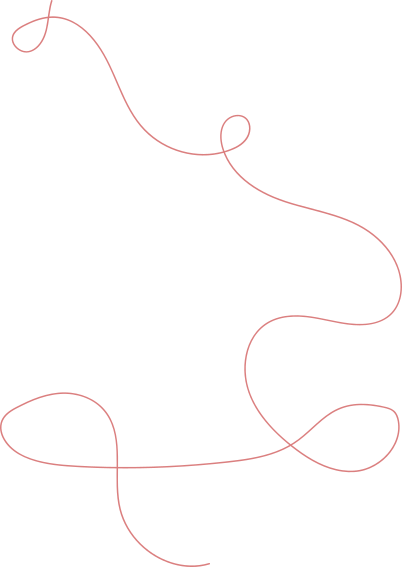
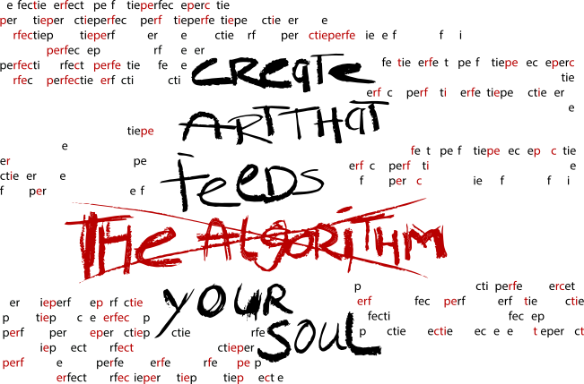
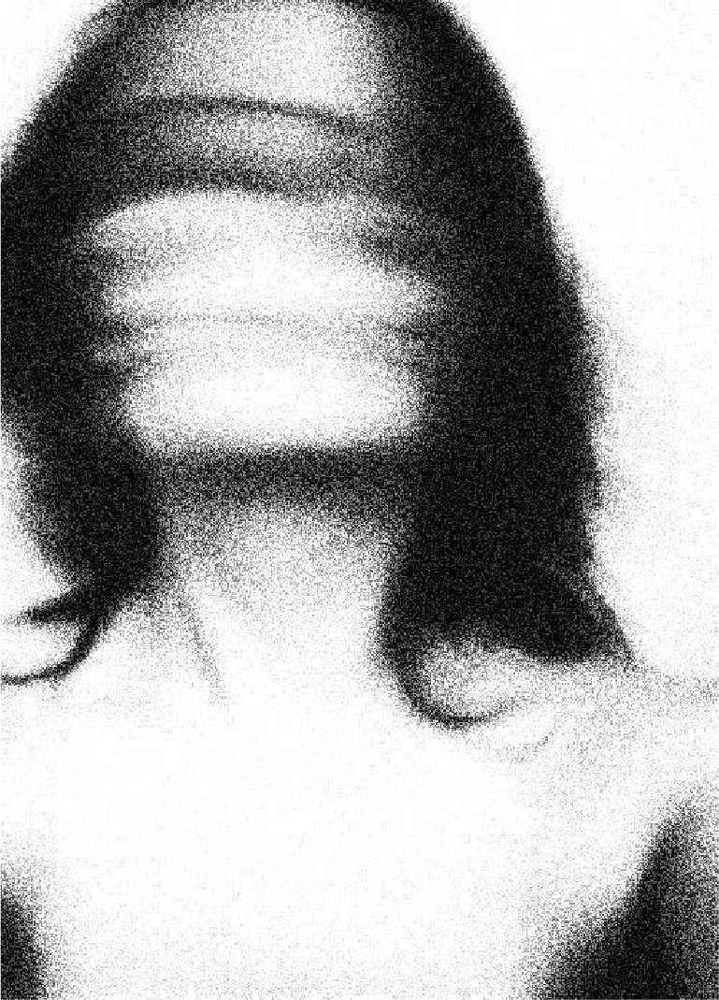
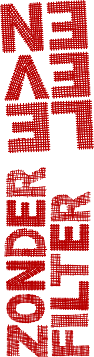
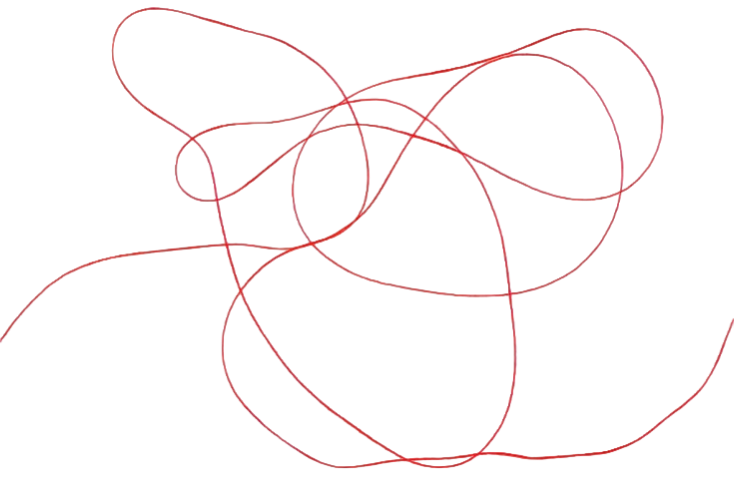

Ik geloof niet in een perfecte wereld.
Ik geloof wel in een wereld waarin je niet perfect hoeft te zijn.
Een wereld waarin een jongere niet wakker wordt en als eerste denkt: zie ik er wel goed genoeg uit? Waarin een foto niet twintig keer opnieuw gemaakt hoeft te worden. Waarin een puistje gewoon een puistje mag zijn. Waarin een slechte dag niet verstopt hoeft te worden en niemand het gevoel krijgt dat iedereen zijn leven beter voor elkaar heeft.
Want opgroeien is al moeilijk genoeg.
Sociale media hoeven daarvoor niet te verdwijnen. We kunnen ze alleen anders gebruiken: niet alleen om te laten zien hoe goed het gaat, maar ook om herkenning te vinden. Niet alleen om te vergelijken, maar om elkaar te inspireren. Niet alleen om likes te verzamelen, maar om echt contact te maken.
Onderzoek van het Trimbos-instituut laat zien dat sociale media jongeren kunnen helpen bij verbinding, identiteit en sociale steun, terwijl vergelijken en bepaalde vormen van gebruik juist negatieve gevolgen kunnen hebben.
Juist wanneer je jong bent, ben je aan het ontdekken wie je bent, wat je mooi vindt, waar je bij hoort en wie je wilt worden. Tegelijkertijd krijg je elke dag honderden beelden te zien van hoe je eruit zou moeten zien en wat je allemaal bereikt zou moeten hebben. Je scrolt en meet jezelf, zonder dat je het doorhebt, af aan mensen die je nooit hebt ontmoet.
Dat gebeurt niet per ongeluk. Het algoritme laat vooral zien wat de meeste aandacht krijgt: de mooiste foto's, de mooiste vakanties, de perfecte versie van andermans leven. Wat echt en rommelig is, verdwijnt naar de achtergrond.
Dat kan anders.
Daarom geloof ik in leven zonder filter. Niet letterlijk zonder elke filter op Instagram of TikTok en niet in het idee dat je alles met iedereen moet delen. Maar in het loslaten van de druk om jezelf mooier, beter en succesvoller voor te doen dan je bent.
Jongeren verdienen de ruimte om zichzelf te ontdekken zonder zich steeds met anderen te vergelijken.

Eén eerlijke post kan al genoeg zijn om iemand te laten merken dat hij niet de enige is. Een foto zonder bewerking. Een verhaal over een mislukte dag. Een bericht waarin iemand zegt: dit vind ik moeilijk. Zo wordt de druk kleiner, niet door een grote revolutie, maar door heel veel kleine momenten van eerlijkheid.
Daarom strijd ik niet tegen het internet.
Ik strijd tegen het idee dat er maar één juiste manier is om mooi, succesvol of gelukkig te zijn.
Mijn perfecte wereld is een wereld waarin imperfectie normaal is.
Waarin ik mezelf niet hoef te veranderen voordat ik mezelf mag waarderen.
Waarin jongeren kunnen opgroeien met de gedachte:
Ik hoef niet het perfecte plaatje te zijn.
Ik mag gewoon mezelf zijn.
Dat is voor mij leven zonder filter.
Een lichaam is geen project dat steeds verbeterd moet worden.
Onzekerheid is niets om je voor te schamen. Bijna iedereen voelt het, maar bijna niemand laat het zien.
Fouten maken hoort bij groeien.
We beoordelen elkaar niet op hoe perfect iemand eruitziet, maar op wie iemand werkelijk is.

